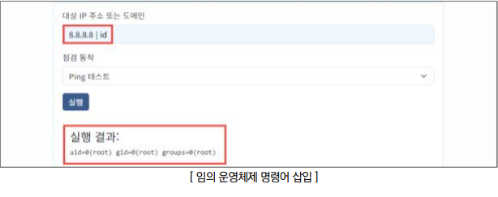
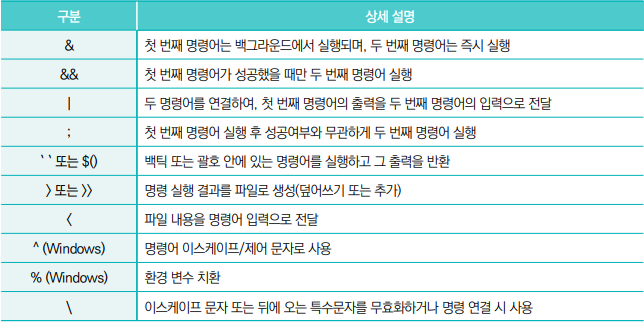

- 점검 방법
Step 1) 웹 애플리케이션 기능 내 전달되는 파라미터 값에 대하여 운영체제 명령어 삽입 후 실행 여부 확인

조치 방법
1. 웹 애플리케이션 설계 시 운영체제로부터 명령어를 직접적으로 호출하지 않도록 구현하고, 언어/프레임워크에서 제공하는 안전한 API 사용
2. 명령어를 직접 호출하는 기능이 필요한 경우에는, 데이터가 OS의 명령어 해석기에 전달되기 전에 화이트리스트 기반으로 입력값을 검증/확인하도록 구현
3. 입력값에 대한 파라미터 데이터의 필터링 처리
- Unix/Linux : &, &&, |, ||, ;, `, $(), <, > 등
- Windows : &, |, ^, % 등
4. 웹 서버 및 웹 애플리케이션 서버는 공개적으로 알려진 취약점이 제거된 상위 버전으로 업데이트 KISA 보호나라&KrCERT/CC 알림마당 > 보안공지(https://www.boho.or.kr/) 5. 웹 방화벽에 모든 사용자 입력값을 대상으로 악용될 수 있는 특수문자 및 키워드 등에 대한 룰셋 적용
